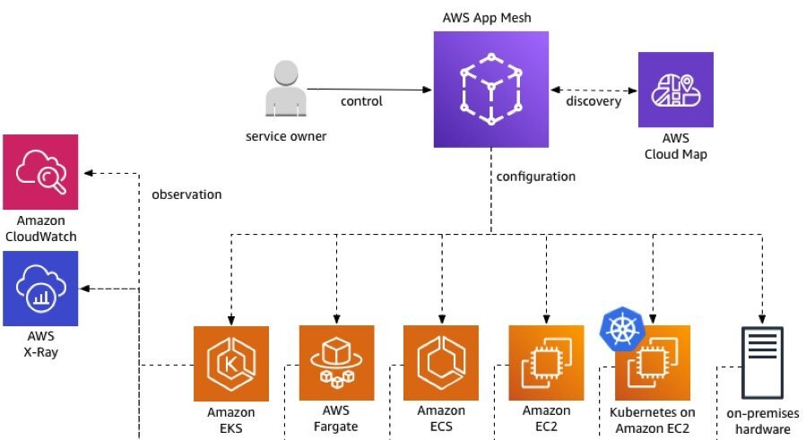

内容摘要：从 1.2 版本开始，Istio 进入季度发布的节奏。5 月 21 日发布的 1.6 版本可以说是最准时的一次。我们是否可以理解 Istio 架构简化后的开发工作已经步入了正轨？这次的更新是否会带给我们惊喜？亦或是还有遗憾？让我们一一道来。 （感谢罗广明同学的审校和修改建议）
加法和减法
Istio 1.6 的 Release note 开篇的标题用三个巨大的 Simplify 来表明态度：我们要把极简主义进行到底！其中最大的简化就是将原有组件的功能完全整合入 Istiod ，完成了悟天克斯们的合体过程，让 Istiod 更加完整，也彻底移除了Citadel、Sidecar Injector 和 Galley。当然，你也可以理解为，这其实是对 1.5 版本未完成工作的收尾。
第二项简化工作是添加 istioctl install 命令来替代 manifest apply 的安装过程，用更直观、更精简的命令改善安装过程的体验。当然，manifest 子命令依然保留，你还是可以通过清单方式进行部署。在 Change Notes 的三十多项更新中，有七个是removed，基本上都和安装有关，比如移除已经废弃的 Helm charts、istio-pilot的配置等。可以看出，Istio 团队在极力的通过优化安装流程和部署形态来提升用户的体验。互联网产品有一个很重要的指标叫留存率，安装过程导致的用户流失是非常不值得的，需要花大力气进行流程的优化和调整。毕竟，第一印象的重要性毋庸置疑，以一个干练清爽的年轻人形象去相亲，还是扮演一个拖泥带水的油腻大叔？成功率高下立判。看来 Istio 团队终于醍醐灌顶，要努力做一个干练的奶油小生了。
再来说说加法。Change Note 中的新增项主要来自四个方面：虚拟机的支持，遥测（Telemetry）的改进，升级，istioctl 命令行。
Istio 通过添加了一个叫 WorkloadEntry 的自定义资源完成了对虚拟机的支持。它可以将非 Kubernetes 的工作负载添加到网格中，这使得你有能力为 VM 定义和 Pod 同级的 Service。而在以前，你不得不通过 ServiceEntry 里的 address 等字段，以曲线救国的方式去实现对非 Pod 工作负载的支持，丑陋又低效。WorkloadEntry 的引入让非 Kubernetes 服务接入网格成为现实。
apiVersion: networking.istio.io/v1alpha3
kind: WorkloadEntry
metadata:
name: details-svc
spec:
serviceAccount: details-legacy
address: vm1.vpc01.corp.net
labels:
app: details-legacy
instance-id: vm1
遥测方面，增加了两个实验性的功能，一个是请求类别过滤器，主要用来对不同 API 方法的请求进行标记和分类；另一个是追踪配置API，可以控制采用率等。除此之前，添加了 Prometheus 标准的抓取标注（annotation），提升了集成的体验。Grafana 的 Dashboard 也有更新，对终端用户来说这倒是可以期待一下。然而，我们最关心的 WASM 只字未提！笔者猜测它在可用性方面还有很多问题。ServiceMesher社区有成员对 Istio 各个版本的遥测做了 benchmark，横向对比的结果是 WASM 方式下性能垫底！甚至还不如 1.3 版本。这让人不禁感慨，WASM 之于 Envoy，会不会只是一次看上去很美好的邂逅呢？
为了能让升级过程更平滑，Istio 提供了一种叫金丝雀升级（Canary upgrades）的策略，可以安装一个金丝雀版本的控制平面，与老版本同时存在。金丝雀升级可以让你逐渐的切换流量以验证新版本的可用性，同时也保留了回滚的能力。当然，如果你足够自信，依然可以原地升级（In place upgrade)。
$ istioctl install --set revision=canary
$ kubectl get pods -n istio-system
NAME READY STATUS RESTARTS AGE
istiod-786779888b-p9s5n 1/1 Running 0 114m
istiod-canary-6956db645c-vwhsk 1/1 Running 0 1m
令笔者惊奇的是，Istio 居然提供了降级（Downgrade）功能！这是因为开发团队对新版本不自信吗？如果说金丝雀升级已经提供了回滚的能力，那又何必为原地升级提供降级能力呢？而且降级也是有限制条件的：必须是 1.5 以上的版本；必须是使用 istioctl安装的；必须使用老版本的 istioctl 执行降级操作。笔者很难想象出它的适用场景，如果你知道，请一定告知我。
向市场妥协
在虚拟机支持方面，Release Note 中有这样一句话：
Expanding our support for workloads not running in Kubernetes was one of the our major areas of investment for 2020
Istio 为什么要花大力气支持 VM 这种即将过气的部署载体？而且要作为 2020 年开发的重中之重？在理解这一举措之前，让我们先来看看 Google 的老对手 Amazon，在自家产品 AWS App Mesh 上的布局。
从下图可以看出，AWS App Mesh 支持了自家的各种工作负载，当然也包括虚拟机和实体机。Amazon CTO Werner Vogers 在使用 AWS App Mesh 重新定义服务通信 一文中写到：
Our goal is to remove the undifferentiated heavy lifting of operating complex applications. We provide the tools, services, and observability to ensure that you can maintain high standards for your own architectures.

这种全方位部署形态的支持，其主要目的就是消除不同，给用户统一的接入体验。而这种不得已为之的策略，其实本质上是云原生应用落地的现状造成的。如果你多了解下身边不同公司的情况，你就会发现现实远比我们想象的要骨感。大量的中小企业都刚刚把上云提上日程，还有很多是实体机 / VM 和部分迁移到云的业务组成的混合体，其部署形态的复杂性可想而知。而 App Mesh 这种远瞻性的策略就是通过覆盖用户现有的各种部署形态，提前将未来全面上云的市场揽入怀中。当你的网格接入层无需变更时，只需要将 VM 之类的负载一一替换即可，最终完成云上的纯粹形态。
我们再来看看 Istio 的同门师弟，Google Cloud Traffic Director 的情况。其官方文档中有如下描述：
按您的节奏进行现代化改造
Traffic Director 既适用于基于虚拟机 (Compute Engine) 的应用，也适用于容器化应用（Google Kubernetes Engine 或自行管理的 Kubernetes），并能分阶段逐步运用于您的服务。
看到这里我想你应该很清楚了，两大云厂商的网格产品无一例外地选择对 VM 支持，主要原因就是综合 Kubernetes、Service Mesh 落地现状，以及市场策略的考量。Istio 选择跟进无可厚非，且可以和自家产品互取所长，共享资源。我们是否可以大胆猜测一下：未来 Istio 可能会和 Traffic Director 兼容甚至合并？
1.6 版本的最大变化，就是提供对虚拟机的支持，也是本年度的重点，其原因我们梳理如下：
-
基于云原生落地现状的考虑：无论是 Kubernetes、Service Mesh，还是云迁移，整个业界依然处于参差不齐的状态，部署形态复杂多变。对 VM 的支持可以为用户提供统一的接入体验，并平滑接入网格技术。
-
对抗（蚕食）竞争对手的市场：在收费的云平台，两大高手的策略旗鼓相当；而在开源方面，Istio 无疑是绝对的主角。同时在付费和免费两个层面统一战线，Istio 的这一神补刀，可以说击中了 AWS 的要害，这可能让本来摇摆不定的技术选型者改变主意。
-
回归平台中立的理念：Istio 一经推出就宣称具有多平台支持的能力，但两年下来大家都心照不宣，知道它对 Kubernetes 的强依赖性。提供 VM 支持正是去平台化的良机，为自己曾经立的 Flag 正名。
另一个很可能属于市场宣传的行为就是高调宣称支持 Kubernetes Service APIs。对于一个还处于 alpha 版本的功能，如此大力地进行支持，再想想 Istio 与 Kubernetes 网络组的关系，不得不让人感觉有广告嫌疑。都是老熟人，互推一下也是应该的。不过亮相的略显刺眼，些许尴尬。
第三个值得一说的是：开始提供新特性预览。
Added a new profile, called
preview, allowing users to try out new experimental features that include WASM enabled telemetry v2.
笔者看到这一项的第一反应：这不就是 AWS Preview 吗？AWS 通过这种方式把新功能提前释放给用户使用，以收集使用数据和建议，来改进功能，可以认为是一种 alpha 测试。Istio 的这一举动可以理解为终于要开始践行 MVP（最小化可行产品）理论了，毕竟从前脱离市场和用户，闭门造车的跟头栽得有点大，痛定思痛，终于选择和用户站在一边。
重要的生态圈
就在 1.6 发布不久前，一直致力于 Service Mesh 生态链产品开发的 solo.io 公司推出了第一个 Istio 开发者门户（Developer portal）。它可以对网格中运行的 API 进行分类，通过 webUI 提供 API 管理的可视化用户体验，同时还能自动地生成 Istio Gateway、VirtualService 这些自定义资源。
solo.io 和 Google Cloud 是商业伙伴关系，旗下的产品 Gloo 和 Service Mesh Hub 都已经整合进了 GCP 和 GKE 中。而这一次发布 Portal 无疑又是一次双赢。
Service Mesh 目前的市场格局并不明朗，依然是硝烟弥漫，产品都尚未定型，更不要说生态圈了。对 Goolge 而言，能提前将 solo.io 这样有实力的小弟招入麾下，围绕 Istio 打造一整套生态链产品，无疑会让 Istio 如虎添翼，也极有可能在市场竞争中增加重量级的砝码。
而对于 solo.io 而言，作为初创公司，能和 Envoy 一样抱着 Service Mesh 头号网红的粗腿，既能持续地获得大量的曝光机会，又能为自己的产品带来持续增长的用户群体。这又让我想起在当年在游戏行业的一对CP，Facebook 和 Zynga。Facebook 为 Zynga 输送了大量的用户，而 Zynga 的社交游戏又为 Facebook 的用户留存和黏性做出了贡献。至于后来的相爱相杀，那又是另外的故事了。我们回归正题，别说是 solo，换做是笔者本人，估计早都高喊着“土豪求做友”跪舔着不放手了。无论如何，solo.io 的一步妙棋，很可能会搅动整个棋局的变化，让我们拭目以待。
生态圈的重要性无需多言，即便如 AWS 这种闭环生态的巨鳄，每年 Summit 也会把最大的展台留给众多 vendor，所谓一个好汉三个帮，谁都不会拒绝有实力的伙伴补强你的实力，玩 LOL 的的朋友会感慨，辅助是多么的重要！Java 叱咤风云二十五年，全靠以 Spring 为首的大将们强力补刀；Golang 若不是没有一个强大的、统一的标准化的生态，估计早把 Java 按在地上摩擦了。再反观日本的动漫产业，再优秀的作品，如果没有丰富的周边和产业链，GDP 要小上几个数量级，恐怕二次元的小弟弟小妹妹们都会少了很多精神寄托吧。
期许和无奈
在 InfoQ 最新发布的“技术采用生命周期”调查报告中，将 Istio、Service Mesh 放入了早期采用者这一列，这其实也从应用和市场层面反映出了它们仍处在产品发展的前期，任重道远。产品有限的成熟度制约了技术选型的空间，反过来市场的谨小慎微又让产品缺少了来自实践端的经验和积累。
本次 1.6 版本的发布我个人认为是惊喜不足，失望有余。Mixer 的寿终正寝让中心化的限流、黑白名单这样有用的功能也跟着陪了葬，还未看到要弥补它们的打算。而期待的 Envoy 与 WebAssembly 的强强联手也在本次更新中只字未提。当然了，产品迭代哪能一蹴而就，时间、成本、质量三要素缺一不可。一统江山的 Kubernetes 到了 1.8 才算是稳定版本，何况现在的 1.18，而我们的 Istio才刚刚到 1.6 而已，还需要更多的时间来沉淀。
前路漫长，但仍可期许，让我们未来见分晓。